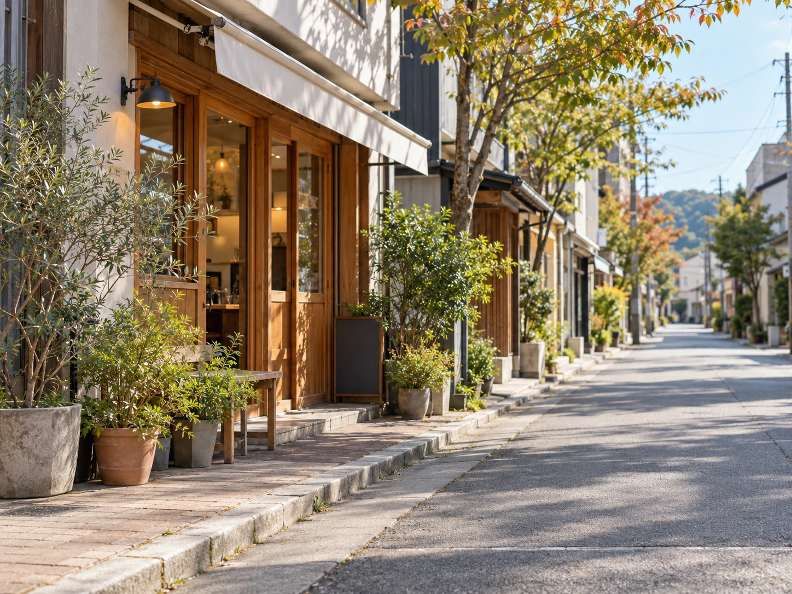

FEATURE
職員の休日：地方資料管理室 藤堂さん
地方資料管理室で働く藤堂さんに、休日の過ごし方と現在の仕事について聞きました。
今回は地方資料管理室で勤務する藤堂さんに、休日の過ごし方を聞きました。喫茶店めぐりが好きだという藤堂さん。最近気に入っている甘いものから、自宅での過ごし方まで、少し仕事を離れた話を伺います。
喫茶店と甘いものを目当てに
――休日は何をしていますか？
藤堂：気になっていた喫茶店やお菓子のお店に行くことが多いですね。前の「事件分析」って部署にいた頃は、同期の高瀬さんと予定を合わせて行くことも多かったんですが、今は勤務場所が離れたので、一人でふらっと行くことが増えました。
――お店はどうやって選んでいるんですか？
藤堂：散歩中に見つけて、次の休みに入ってみようと思うことが多いです。外に出ているメニューを見て、プリンがあったら覚えておきます（笑）。有名なお店にも行きますが、近所で長く続いている喫茶店も好きですね。最初は少し入りにくくても、一度入ると落ち着けることが多いです。
――おすすめのスイーツを教えてください。
藤堂：まずは、少し固めのカスタードプリンです。カラメルに苦みがあるものが特に好きで、温かいコーヒーと一緒に頼みます。焼き色のついたベイクドチーズケーキもいいですね。お店に季節の果物を使ったタルトがあると迷ってしまって、結局そちらを選ぶ日もあります。おすすめを聞かれたのに、絞れていませんね（笑）。
――持ち帰ることもありますか？
藤堂：フィナンシェやマドレーヌを買って帰ることがあります。一度に食べきらなくていいので、翌日の楽しみになるんです。少し温めて、お茶を入れて食べるだけで、家でも十分満足できます。買いすぎないようにと思うんですが、店頭で見るとつい一つ増えてしまいます。

予定を詰めず、ゆっくり歩く
――喫茶店以外では、どんなふうに過ごしていますか？
藤堂：天気がよければ、店に行く前後に少し歩きます。普段は通らない道に入ったり、商店街の本屋をのぞいたり。最初から予定をたくさん決めるより、一軒だけ行きたい場所を決めて、あとはその日の気分で動くのが好きです。買った本を喫茶店で読んでいたら、思ったより長居してしまうこともあります。
――家で過ごす休日もありますか？
藤堂：もちろんあります。雨の日は、無理に出かけずに洗濯や部屋の片づけをして、あとは本を読んだり、映画を見たりしています。朝だけ少し丁寧にコーヒーを入れることもありますね。何もしない時間を作るのも、休みの日には必要だと思っています。
最後に、今の仕事について
――資料管理の仕事は？
藤堂：昔の記録を読み直す機会が多いです。同じ文章でも、時間が経ってから見ると気づくことがあります。
――休日を過ごした後は、気持ちも切り替わりますか？
藤堂：そうですね。歩いて、甘いものを食べて、よく寝る。それだけでずいぶん違います。次の休みに行きたいお店が一つあると、平日もちょっと楽しみができますね。
「まずはプリンがおいしい店を一軒見つけてみてください」と藤堂さん。気になるお店に立ち寄り、寄り道も楽しむ。そんな肩の力を抜いた休日の過ごし方を教えてもらいました。